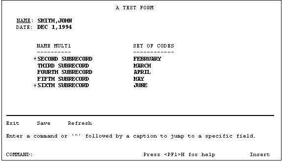

| Contents: | Main | Chapter | See Also: | Getting Started Manual | Advanced User Manual | |||
You can display more than one subrecord in a Multiple simultaneously on the screen.
REF: See the "Multiples" section in the VA FileMan User Manual.
You do this by defining a repeating block, a block that has a Replication property value greater than 1. The Replication number defines the number of times the fields on the block appear on the screen. 22.2 Fields can occupy multiple lines and are repeated together. The DD Number property of the block corresponds to the subfile number of the Multiple.
You should reserve one column to the left of the repeating block for ScreenMan to display the plus sign (+) indicator before the first and last lines of the list.
Figure 222 shows two subfields of a Multiple displayed in a repeating block:
Figure 222: ScreenMan Forms—Sample of Two Subfields of a Multiple Displayed in a Repeating Block

The subfields are NAME MULT1 and SET OF CODES. The repeating block has a Replication value of 5; therefore, up to five subrecords can be displayed simultaneously.
The coordinate of the repeating block corresponds to the position of the first line in the list.
The column headings are defined as caption-only fields on another block that is non-repeating.
The last line in the scrolling list is blank. This is where the user can add a subrecord by entering a new name or jump to a particular entry in the list by entering the name of an existing subrecord. By default, this blank line is positioned in the same column as the first editable field in the repeating block.
Table 71 lists the variables that are available in the pre- and post-actions of fields on the repeating block, as well as in the Executable Caption code:
Table 71: ScreenMan Forms—Variables Available in Repeating Blocks
| Local Variable | Description |
| DDSSN | The sequence number in the list of the current subrecord. |
| DDSLN | The line number in the repeating block on which the cursor is currently resting. |
The block properties in Table 72 apply only to repeating blocks:
Table 72: ScreenMan Forms—Block Properties that Apply only to Repeating Blocks
| Repeating Block Property | Description |
| Replication | The number of times the fields defined in this block should be replicated. This number must be greater than 1. |
| Index | (Optional) The name of the index that should be used to
pick up the subrecords in the Multiple. The subrecords will initially
be sorted in the order defined by this index. The default Index is B.
If the Multiple has no B index, or to display the subentries in record
number order, enter the following:
!IEN |
| Initial Position | (Optional) This is where the cursor should rest when the
user first navigates to the repeating block. Possible values are:
|
| Disallow LAYGO | (Optional) If set to YES, this prohibits the user from entering new subrecords into the Multiple. |
| Field for Selection | (Optional) This is the field order of the field that defines the column position of the blank line at the end of the list. The default is the first editable field in the block. This is also the field before which ScreenMan prints the plus sign (+) to indicate there are more entries above or below the displayed list. |
Reviewed/Updated: May 2026